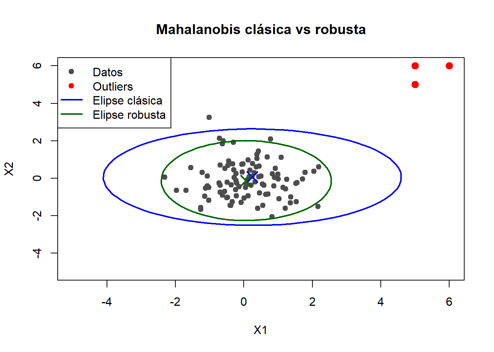

Código
df <-read.csv("ifood_df.csv")Cargamos la base de datos que utilizamos para PCA.
df <-read.csv("ifood_df.csv")Trabajamos unicamente con una muestra.
set.seed(11)
df_sample <- dplyr::distinct(df) |> #elimino datos repetidos
sample_n(350)
df_num <- df_sample |>
select(1, 5:13, 25)#selecciono columnas de interes \(D_M(X, Y) = \sqrt{(X- Y)^T \Sigma^{-1} (X - Y)}\)
La función mahalanobis() en R calcula el cuadrado de la distancia de Mahalanobis (\(D^2\)), la cual mide la separación entre un punto y el centro de una distribución multivariada, ajustándose según la correlación entre variables.
La métrica devuelta por la función estándar de R es:
\[D^2 = (x - \mu)^T \Sigma^{-1} (x - \mu)\]
Donde:
Nota: La función
mahalanobis()en R devuelve el valor al cuadrado. Para obtener la distancia lineal, se debe aplicar la raíz cuadrada: \(\sqrt{D^2}\).
Cuando existen valores atípicos en el dataset, la media (\(\mu\)) y la matriz de covarianza (\(\Sigma\)) se ven distorsionadas, lo que puede causar que los outliers pasen desapercibidos (efecto de enmascaramiento). ### Fórmula Matemática
La estructura de la fórmula se mantiene, pero sustituye los estimadores clásicos por otros de alto punto de ruptura (usualmente Minimum Covariance Determinant - MCD):
\[D^2_{robusta} = (x - \hat{\mu}_{MCD})^T \hat{\Sigma}_{MCD}^{-1} (x - \hat{\mu}_{MCD})\]
Donde:
# -------------------------
# 1. Datos simulados
# -------------------------
set.seed(123)
n <- 100
x <- cbind(
rnorm(n, mean = 0, sd = 1),
rnorm(n, mean = 0, sd = 1)
)
# Agrego outliers
outliers <- rbind(c(5, 5), c(6, 6), c(5, 6))
x <- rbind(x, outliers)
# -------------------------
# 2. Mahalanobis clásica
# -------------------------
center_classic <- colMeans(x)
cov_classic <- cov(x)
# -------------------------
# 3. Mahalanobis robusta (MCD)
# -------------------------
cov_rob <- MASS::cov.rob(x, method = "mcd")
center_rob <- cov_rob$center
cov_robust <- cov_rob$cov
# -------------------------
# 4. Función para dibujar elipse
# -------------------------
ellipse_points <- function(center, cov, level = 0.975, npoints = 100) {
theta <- seq(0, 2*pi, length.out = npoints)
circle <- cbind(cos(theta), sin(theta))
# radio basado en chi-cuadrado
radius <- sqrt(qchisq(level, df = 2))
# descomposición
eig <- eigen(cov)
shape <- eig$vectors %*% diag(sqrt(eig$values)) * radius
ellipse <- t(center + t(circle %*% shape))
return(ellipse)
}
ell_classic <- ellipse_points(center_classic, cov_classic)
ell_robust <- ellipse_points(center_rob, cov_robust)
# -------------------------
# 5. Gráfico
# -------------------------
plot(x, pch = 19, col = "gray30",
main = "Mahalanobis clásica vs robusta",
xlab = "X1", ylab = "X2",
xlim = c(-5, 6),
ylim = c(-5, 6))
# outliers en rojo
points(outliers, col = "red", pch = 19, cex = 1.3)
# elipse clásica
lines(ell_classic, col = "blue", lwd = 2)
# elipse robusta
lines(ell_robust, col = "darkgreen", lwd = 2)
# centros
points(center_classic[1], center_classic[2], col = "blue", pch = 4, cex = 2, lwd = 2)
points(center_rob[1], center_rob[2], col = "darkgreen", pch = 4, cex = 2, lwd = 2)
legend("topleft",
legend = c("Datos", "Outliers", "Elipse clásica", "Elipse robusta"),
col = c("gray30", "red", "blue", "darkgreen"),
pch = c(19, 19, NA, NA),
lty = c(NA, NA, 1, 1),
lwd = c(NA, NA, 2, 2))
Creamos una función que calcula la distancia de Mahalanobis clásica y su versión robusta. Para identificar los posibles outliers se aplica un test estadístico. La distancia de Mahalanobis al cuadrado sigue una chi-cuadrado con tantos grados de libertad como variables del dataset.
detectar_outliers_mahalanobis <- function(df, alpha = 0.05) {
df %>%
# nos quedamos con columnas numéricas para el cálculo
{
df_original <- .
df_num <- select_if(df, is.numeric)
p <- ncol(df_num)
# -------------------------
# Mahalanobis clásica
# -------------------------
center_classic <- colMeans(df_num, na.rm = TRUE)
cov_classic <- cov(df_num, use = "complete.obs")
dist_classic <- mahalanobis(df_num, center_classic, cov_classic)
# -------------------------
# Mahalanobis robusta (MCD)
# -------------------------
cov_rob <- robustbase::covMcd(df_num)
dist_rob <- mahalanobis(df_num, cov_rob$center, cov_rob$cov)
# -------------------------
# Umbral
# -------------------------
threshold <- qchisq(1 - alpha, df = p)
# -------------------------
# Bind de resultados
# -------------------------
df_original %>%
mutate(
dist_mahalanobis = dist_classic,
dist_mahalanobis_rob = dist_rob,
outlier_classic = dist_mahalanobis > threshold,
outlier_robust = dist_mahalanobis_rob > threshold
)
}
}df_out <- df_num |>
detectar_outliers_mahalanobis()library(kableExtra)
df_out %>%
filter(outlier_robust & !outlier_classic) %>%
arrange(desc(dist_mahalanobis_rob)) %>%
dplyr::select(-outlier_classic, -outlier_robust) %>%
head(10) %>%
knitr::kable(
caption = "Outliers detectados solo por Mahalanobis robusta"
)| Income | MntWines | MntFruits | MntMeatProducts | MntFishProducts | MntSweetProducts | MntGoldProds | NumDealsPurchases | NumWebPurchases | NumCatalogPurchases | Age | dist_mahalanobis | dist_mahalanobis_rob |
|---|---|---|---|---|---|---|---|---|---|---|---|---|
| 75345 | 918 | 57 | 842 | 99 | 38 | 133 | 1 | 5 | 8 | 50 | 17.05057 | 2544.824 |
| 79930 | 792 | 86 | 740 | 67 | 51 | 17 | 1 | 3 | 5 | 48 | 14.18627 | 1967.833 |
| 90765 | 547 | 99 | 812 | 151 | 82 | 33 | 0 | 4 | 6 | 50 | 15.45844 | 1882.608 |
| 88420 | 957 | 153 | 612 | 99 | 95 | 153 | 1 | 4 | 7 | 31 | 19.54342 | 1634.577 |
| 66636 | 291 | 10 | 689 | 84 | 10 | 0 | 1 | 3 | 4 | 63 | 19.62602 | 1560.117 |
| 76542 | 794 | 73 | 573 | 0 | 29 | 14 | 1 | 4 | 8 | 64 | 17.52892 | 1294.317 |
| 94472 | 1017 | 33 | 417 | 108 | 100 | 16 | 1 | 5 | 5 | 62 | 14.16395 | 1230.371 |
| 74214 | 863 | 83 | 547 | 86 | 99 | 33 | 1 | 8 | 2 | 30 | 19.53697 | 1209.788 |
| 81044 | 450 | 26 | 535 | 73 | 98 | 26 | 1 | 5 | 6 | 73 | 15.12174 | 1114.538 |
| 68281 | 995 | 112 | 417 | 42 | 48 | 41 | 1 | 2 | 9 | 62 | 19.26593 | 1097.926 |
df_out %>%
filter(outlier_classic) %>%
arrange(desc(dist_mahalanobis_rob)) %>%
dplyr::select(-outlier_classic, -outlier_robust) %>%
head(10) %>%
knitr::kable(
caption = "Outliers detectados solo por Mahalanobis clasico"
)| Income | MntWines | MntFruits | MntMeatProducts | MntFishProducts | MntSweetProducts | MntGoldProds | NumDealsPurchases | NumWebPurchases | NumCatalogPurchases | Age | dist_mahalanobis | dist_mahalanobis_rob |
|---|---|---|---|---|---|---|---|---|---|---|---|---|
| 113734 | 6 | 2 | 3 | 1 | 262 | 3 | 0 | 27 | 0 | 75 | 143.15548 | 4431.478 |
| 82332 | 830 | 59 | 968 | 51 | 79 | 19 | 1 | 5 | 3 | 59 | 31.74230 | 3591.226 |
| 77632 | 1200 | 105 | 758 | 0 | 42 | 147 | 1 | 4 | 2 | 73 | 40.17409 | 3210.423 |
| 78789 | 667 | 50 | 850 | 21 | 83 | 83 | 1 | 4 | 6 | 40 | 22.88068 | 2774.011 |
| 83512 | 1060 | 61 | 835 | 80 | 20 | 101 | 1 | 4 | 7 | 34 | 20.18860 | 2751.151 |
| 69209 | 496 | 32 | 849 | 229 | 48 | 128 | 2 | 5 | 3 | 48 | 35.74805 | 2723.943 |
| 72159 | 322 | 53 | 899 | 34 | 40 | 53 | 1 | 4 | 6 | 42 | 28.51416 | 2539.629 |
| 92163 | 817 | 183 | 797 | 106 | 163 | 20 | 0 | 5 | 11 | 45 | 32.90746 | 2347.113 |
| 69930 | 252 | 98 | 827 | 219 | 70 | 196 | 1 | 4 | 5 | 49 | 31.74626 | 2053.013 |
| 90687 | 982 | 17 | 672 | 23 | 34 | 51 | 1 | 6 | 2 | 37 | 24.52823 | 2006.125 |